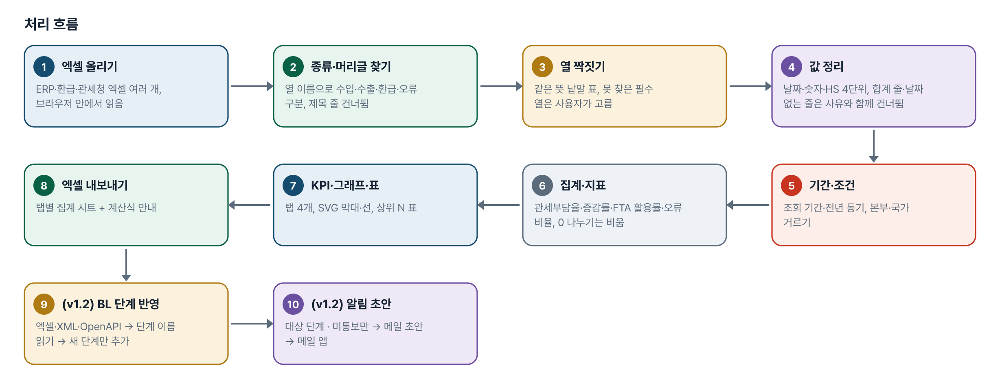
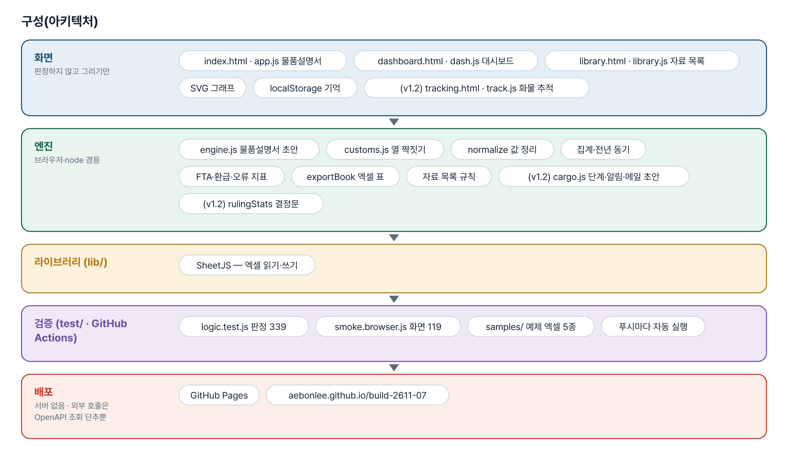
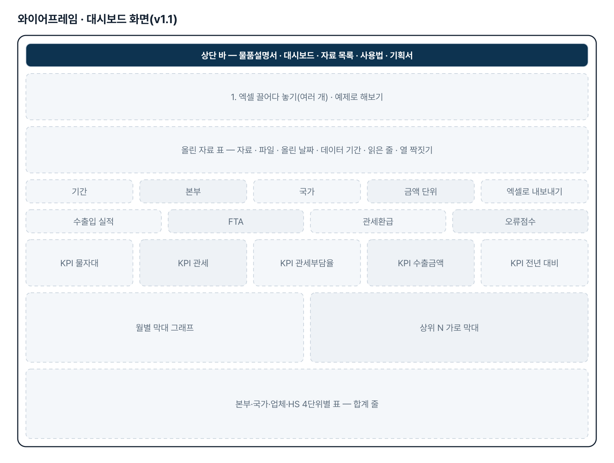
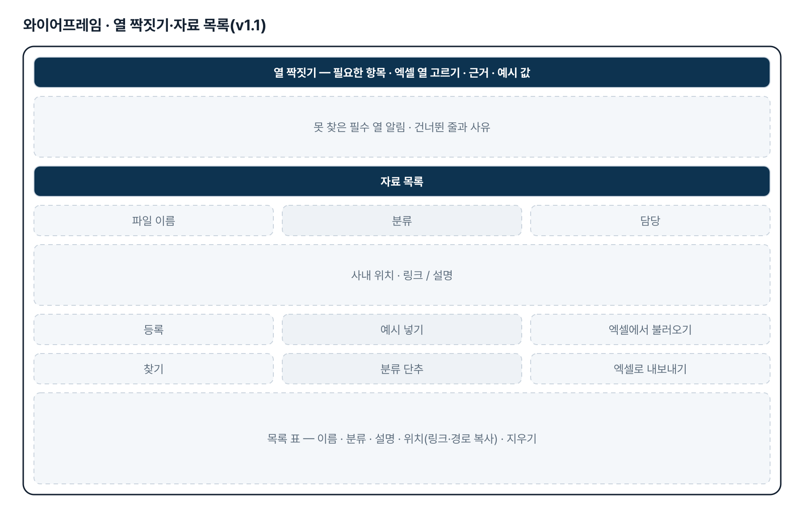
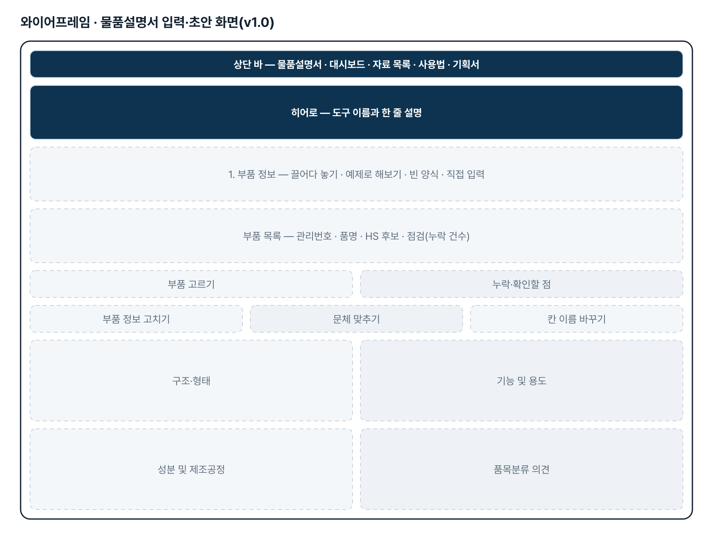
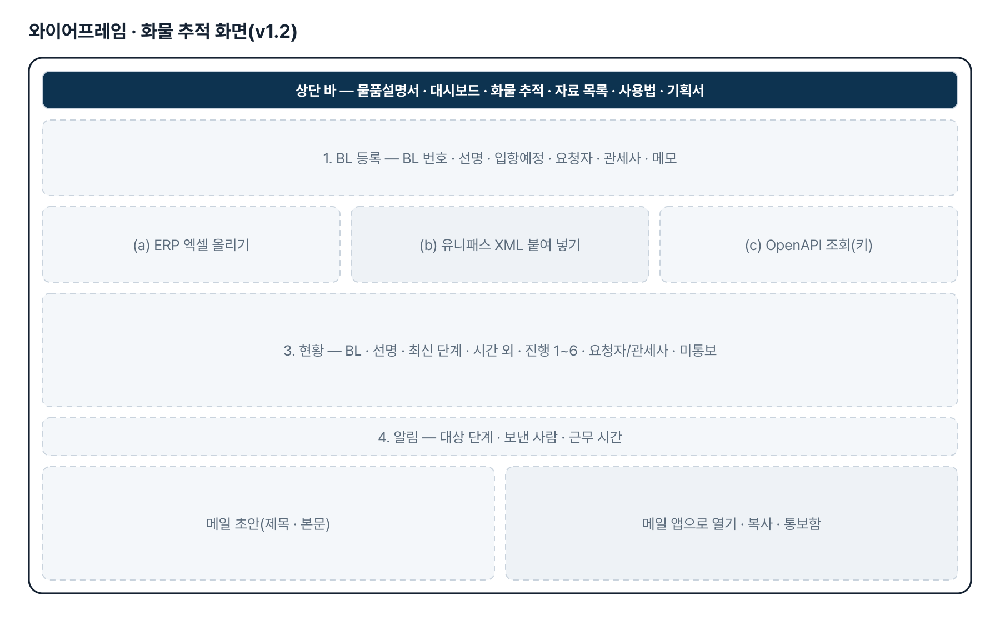
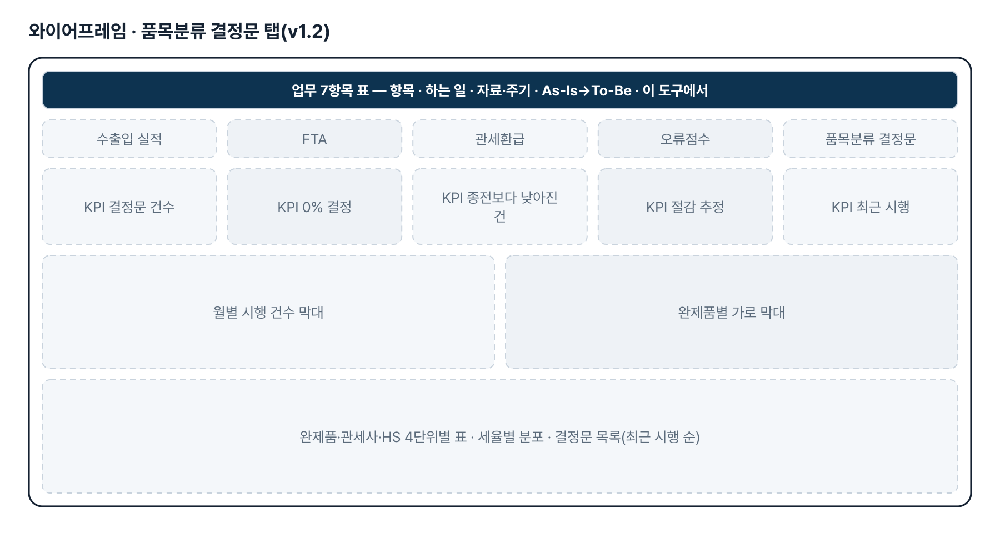
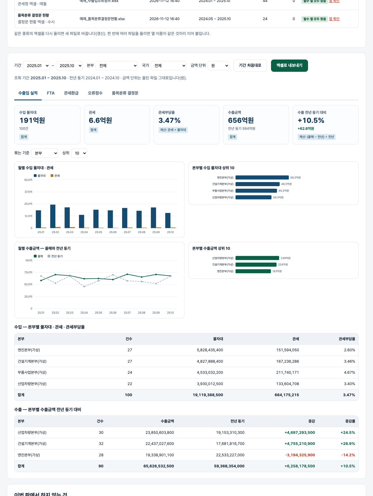

기획서 내려받기
파이프라인 · 아키텍처 · 와이어프레임 · 개발일지가 들어간 워드 문서입니다. 버전마다 따로 남깁니다.
| 버전 | 날짜 | 바뀐 점 | 파일 |
|---|---|---|---|
| v1.4 | 2026-11-12 | 물품설명서 「4. 내보내기」에 워드(.docx) 내보내기 추가 — 보내 주신 물품설명서 양식과 같은 짜임(제목 · 1~6절 · 작성 안내 ☞ · A4 여백), 부품마다 새 쪽 / 작성 안내 줄을 넣거나 빼는 선택, 화면에서 고친 문장 · AI 반영 표시 · 누락 표시가 워드에도 그대로 / 화물 추적 화면의 BL 선택 상자가 360px 에서 화면 밖으로 나가던 것 고침 / 판정 425(v1.4 21) · 워드 화면 10 | 워드 내려받기 |
| v1.4.3 | 2026-11-13 | 예제 엑셀 5종 내려받기를 첫 쪽(물품설명서)에도 넣고, 「예제 엑셀 5개 모두 내려받기」 단추를 추가(누르면 5개 파일이 차례로 내려받아짐). ZIP 한 파일 · 하나씩 받기도 그대로 | 워드 내려받기 |
| v1.4.2 | 2026-11-13 | 대시보드 — 예제 엑셀 5종을 모두 받을 수 있게 함(기획자 요청): 「5종 한꺼번에 받기(ZIP)」 단추와 종류별 내려받기 링크. 그전에는 수입 예제만 받을 수 있었음 / 첫 화면 사진 3장 · 문구(기획자 제공) | 워드 내려받기 |
| v1.4.1 | 2026-11-12 | 상단 메뉴 순서 변경(기획자 요청) — 대시보드 · 화물 추적 · 오류점수 · 물품설명서 · 자료 목록 · 사용법 · 기획서. 첫 화면 주소와 기능은 그대로 | 워드 내려받기 |
| v1.3 | 2026-11-04 | 기획자 메일(2026-11-04 오후, 「7.수출입통관Dashboard_4.수출입통관오류점수분석」, 엑셀 4개) 대응 / 오류점수 분석 화면 errors.html · js/errors.js · js/errscore.js / 판정 339→404 · 화면 119→137 | 워드 내려받기 |
| v1.2 | 2026-11-04 | 메일 2통(2026-11-04 07:45 「6. 수입보세화물Tracking 구축」 · 09:40 「5. 물품설명서 작성 자동화」)의 자료 반영 / 물품설명서 초안을 양식 6절(품명 머리글 + 2~6절 다섯 칸)로 — 제출서류 목록·공급자 HS·상표 칸 추가, 인쇄 양식 절 번호 / 대시보드 「품목분류 결정문」 탭(결정 건수·0% 결정 비율·절감 추정·완제품/관세사/HS 4단위·월별·목록) · 맨 위 「업무 7항목」 표 · 예제 엑셀 5종 / 화물 추적(tracking.html · js/cargo.js · js/track.js): BL 등록, ERP 엑셀/유니패스 XML/OpenAPI 로 단계 가져오기, 새 단계 알림 메일 초안, 통보 기록, 시간 외, 엑셀 / 테스트 판정 222→339 · 화면 77→119 | 워드 내려받기 |
| v1.1 | 2026-11-03 | 추가 요청(게시물 4128396865 「(기획v1.0)수출입통관업무Dashbord」) — 수출입통관 업무 대시보드 / 대시보드(dashboard.html): 엑셀 여러 개 올리기·종류 알아보기·열 짝짓기, 수출입 실적·FTA·관세환급·오류점수 탭, 기간·본부·국가 거르기, 탭별 집계 엑셀 / 엔진 js/customs.js · 예제 엑셀 4종 samples/ · 통관 서식·매뉴얼 자료 목록(library.html) / 테스트 판정 91→222 · 화면 23→77 | 워드 내려받기 |
| v1.0 | 2026-11-02 | 첫 판 — 부품 정보 일괄 입력·누락 점검·네 칸 규칙 초안·문체 맞추기·칸 이름 설정·AI 다듬기(선택)·엑셀·인쇄 양식 / 기획서 워드 판·파이프라인·아키텍처·와이어프레임 추가 | 워드 내려받기 |
요구사항과 구현
| 기획서 요구 | 구현 |
|---|---|
| 물품설명서 양식 자동 작성 | 규칙 문장 틀로 네 칸 초안 — 키 없이 동작 |
| 작성 내용 4항목 | 구조·형태 / 기능 및 용도 / 성분 및 제조공정 / 품목분류 의견, 칸 이름은 설정에서 바꿈 |
| 고관세 품목 질의용 의견 | HS 후보 나열 · 다른 류 후보면 전용·범용 근거 요청 · 최종 판단은 담당자 문구 |
| 종전 복사·붙여넣기 작업 줄이기 | 엑셀 여러 건 일괄 → 목록·누락 점검 → 칸별 수정 → 일괄 내보내기 |
| 지정 양식에 자동 작성 | 인쇄용 표 양식(건마다 쪽 나눔) · 엑셀(물품설명서·입력·안내 시트) |
| 종전 작성 이력 활용 | 과거 작성 사례 붙여넣기 — 문장 끝맺음을 세어 문체만 따름 |
| AI 활용(선택) | OpenAI·Anthropic 중 선택, 보안 확인 후 전송, 결과는 「AI 초안 — 검토 필요」 |
| (v1.1) 수입현황: 물자대·관세·관세부담율, 본부·국가·업체·HS 4단위 | 관세부담율 = 관세 ÷ 물자대, 묶는 기준 4가지, 상위 N + 그 밖, 월별 막대 |
| (v1.1) 수출현황: 수출금액 전년대비 증감 | 전년 동기(같은 달 12개월 전) 대비 증감액·증감률, 전년에만 있던 묶음도 표시, 월별 올해·전년 선 |
| (v1.1) FTA 수출입 실적: 물자대/물자대_FTA/절감액 | 수입·수출 따로 FTA 활용률(물자대_FTA ÷ 물자대)·절감액, 본부·국가·업체별 |
| (v1.1) 본부별 매월 관세환급 실적 | 본부 × 월 표(행·열 합계), 월 평균, 최근 달 |
| (v1.1) 신고건수/오류건수/오류점수/비율 | 오류 비율 = 오류건수 ÷ 신고건수, 월별·구분(수입·수출)별 |
| (v1.1) ERP·관세청 엑셀, Real Time | 엑셀 여러 개 올리기 → 종류 알아보기 · 열 짝짓기(같은 뜻 낱말, 못 찾으면 사용자가 고름) · 다시 올리면 갱신 · 브라우저에 기억 |
| (v1.1) 통관서식/업무매뉴얼 공유 | 자료 목록 — 이름·분류·설명·사내 위치만 등록(파일은 저장하지 않음), 찾기·엑셀 내보내기/불러오기 |
| (v1.2) 물품설명서 양식 6절(메일 2026-11-04 09:40 첨부 양식) | 1절 품명은 머리글(품명·모델·상표·규격·적용 장비·HS 후보), 2~6절 다섯 칸을 초안으로. 5절 제출서류 목록은 입력한 붙임 자료와 해외 공급자 HS 를 나열 |
| (v1.2) 5-2 실적 모니터링 — 품목분류 결정문 접수 때 고정비 절감 실적 | 결정문 현황 엑셀(연번·완제품·품명·결정세번·결정문번호·시행일자·관세율·관세사) → 결정 건수 · 관세율 0% 건수와 비율 · 완제품/관세사/HS 4단위별 · 월별 · 세율별 분포 · 목록. 종전세율·연간 수입액 열이 있으면 절감 추정 |
| (v1.2) 6. 수입보세화물 Tracking — 입항보고제출·수입신고 때 관세사·요청자에게 전달 | tracking.html — BL 등록, ERP 엑셀/유니패스 XML/OpenAPI(키 있을 때) 로 단계 가져오기, 새로 생긴 대상 단계마다 메일 초안(mailto·복사), 통보 기록, 시간 외 표시 |
| (v1.2) 대시보드 7항목 구조(수출입통관업무Dashboard.xlsx 총괄 시트) | 대시보드 맨 위 「업무 7항목」 표 — 항목마다 자료·주기·As-Is→To-Be 와 이 도구의 위치 |
| (v1.3) 7. 4. 수출입통관 오류점수 분석 — 유니패스 귀책사유자별 오류현황·상세목록을 인천·울산으로 나눠 요약, 동일 신고번호 1건, 분기 300점 관리, AEO 관리대장·월별 공유 메일 | errors.html — 수입·수출 엑셀 → 부호별 인천/울산 → 월별 표·분기 경계·담당자 요약 표 대조·항목별 원인·관리대장 표·메일 초안·엑셀 |
| (v1.4) 내보내기에 워드 파일 추가 | 「워드(.docx)로 내보내기」 — 양식과 같은 짜임으로 부품마다 한 벌, 작성 안내 줄 선택 |
그림으로 보기








개발일지
2026-11-13 · v1.4.2 예제 엑셀 5종 내려받기
- 패들릿 댓글(최창섭): 대시보드에서 수입만 예제가 내려받아짐 → 나머지 4종 링크와 ZIP 추가
- samples/예제_엑셀_5종.zip 은 samples/ 의 5개 파일을 그대로 묶은 것(예제를 다시 만들면 ZIP 도 다시 묶는다)
2026-11-13 · 마무리 — 로그인 · 게시판 · 첫 화면(판 2026-11-13.1)
- 과정 마무리 묶음을 붙임(마산 2차수 과제와 같은 키트) — 로그인 전 첫 화면(사진 3장 · 기능 · 사용 순서 · 기획서), 회원가입 → 사용 신청 → 관리자 승인, 게시판 · 새 글 알림, 내 정보, 관리(구성원 승인 · 첫 화면 모양)
- Supabase 표 · 함수 · 정책은 전부 build261107_ 로 시작(auth.sql · board.sql · site.sql). 과정용 프로젝트에 적용했고, supabase/README.md 순서대로 본인 프로젝트로 옮길 수 있음
- 도구의 계산 · 판정 · 저장 방식은 그대로(업무 자료는 지금처럼 브라우저 안에서만 처리). 기획서 · 사용법 쪽은 로그인 없이 읽음
- 내 PC(파일로 열기 · localhost)에서는 로그인을 건너뜀 — 주소 끝에 ?auth=1 을 붙이면 로그인 화면을 볼 수 있음
2026-11-13 · v1.4.1 메뉴 순서
- 기획자 메일(11-12 20:00) — 상단 메뉴 순서를 대시보드부터로 바꿔 달라는 요청. 7개 화면의 메뉴 순서만 바꿈(기획서 페이지 메뉴도 같은 순서로)
- 첫 화면(index.html = 물품설명서)과 각 기능은 손대지 않음
2026-11-12 · v1.4 워드 내보내기
- 기획자 메일(11-12 15:54) — 「물품설명서 작성 자동화의 4. 내보내기에 엑셀 외에 첨부한 워드 파일 추가」
- 첨부 양식은 메일 탭 안에서 구조만 읽음(제목 20pt 굵게 가운데, 절 제목 16pt 굵게, 안내 · 본문 12pt, A4, 여백 위 30mm · 나머지 25.4mm). 양식 원본은 저장소에 두지 않고 같은 짜임을 코드로 만든다
- docx 묶기는 이미 들어 있는 SheetJS 의 zip 기능을 써서 라이브러리를 더하지 않음
- 만든 파일을 python-docx 로 열고 PDF 로 바꿔 쪽 모양 확인(부품 3건 = 6쪽)
- 전체 화면 테스트에서 화물 추적 360px 넘침 2px 을 발견해 함께 고침
2026-11-04 · v1.3 오류점수 분석
- 요청: 관세청 유니패스 오류점수를 인천·울산으로 구분 분석, 분기 300점 이상이면 실물서류 제출이라 관리 필요, 신고번호 앞 5자리로 구분, 동일 신고번호 1건, 요약·AEO 관리대장·매월 공유 메일.
- 엑셀 값은 메일 탭 안에서만 읽었고 저장소에 넣지 않았다. 예제는 가짜 수치·가짜 신고번호다.
2026-11-04 · v1.2 양식 6절 · 결정문 현황 · 수입보세화물 추적
- 추가 요청 원문(메일 2026-11-04 07:45, 최창섭 → 이애본): 「(수입보세화물Tracking구축) 업무시간이후 퇴근후 수입화물에 대한 통관요청이 현업요청을 대응하기 위하여 관세청 open API를 활용 BL번호 처리단계중 주요 event 통관관세사 및 요청자에게 전달할 수 있도록 대쉬보드 추가 운영코자 합니다. (종전)BL번호 접수후 관세청 수입화물진행정보에서 조회 (변경)OPEN API활용 - 처리단계가 입항보고제출과 수입신고 표시시 관세사와 요청자 정보전달」 + 첨부 수출입통관업무Dashboard.xlsx(총괄 시트 7항목) · MYC OpenAPI 연계가이드 PDF
- 추가 요청 원문(메일 2026-11-04 09:40): 「물품설명서 작성 자동화관련 관리 데이타를 송부 드립니다. 물품설명서양식->물품설명서 초기 프로트타입양식 ->품목결정문접수현황->고정비절감실적현황 … -물품설명서 : 서술체형식, A4 5장(10page) (착안점) 품목분류사례의 학습방법 관세청 관세법령정보포탈의 품목분류 국내외 사례」 + 첨부 물품설명서양식_워드.docx(6절) · 품목분류사전회신결정문현황_20261104.xlsx(37건) · 02_AI 물품설명서 프롬프트 검토 양식(DRM, 못 읽음) · 고정비절감 현황 PDF
- 엔진 engine.js 양식 6절 · customs.js 결정문 데이터·관세율 읽기·rulingStats·엑셀 시트·예제 5종 · cargo.js(새) 단계·일시·시간 외·등록·반영·알림·메일 초안·XML·OpenAPI 주소·ERP 열·엑셀 표·예제
- 화면 tracking.html·track.js(새), dashboard.html 7항목 표·결정문 탭, index.html·guide.html 6절, 상단 메뉴 「화물 추적」
- 판정 테스트 339 · 화면 테스트 119 통과
2026-11-03 · v1.1 수출입통관 업무 대시보드
- 추가 요청 원문(패들릿 게시물 4128396865 「(기획v1.0)수출입통관업무Dashbord」): 수출입통관업무 실적데이터를 분석하여 통관업무실적 및 KPI Real Time으로 분석하는 Dashbord 제작 / 1)수출입통관실적분석 / -수입현황분석 : 물자대 및 관세 관세부담율 / .본부별 / 국가별 /업체별 / HS CODE 4단위 / -수출현황분석 : 수출금액 전년대비 증감 / .본부별/국가별/업체별 / HS CODE 4단위 / *데이터 : ERP엑셀데이터, 발생주기 : 매일 / 2)FTA수출입실적분석 / -수입FTA실적분석 : 물자대/물자대_FTA/절감액 / -수출FTA실적분석: 물자대/물자대_FTA/절감액 / *데이터 : ERP엑셀데이터, 발생주기 : 매일 / 3)관세환급실적분석 / -본부별 매월 관세환급 실적 / *데이터: 환급프로그램 엑셀파일 발생주기 ; 매월 / 4)수출입오류점수분석 / -신고건수/오류건수/오류점수/비율 분석 / *데이터 : 관세청엑셀파일, 발생주기 : 매월 / 5)물품설명서작성 / -수입품목중 8%고세율 물품설명서 작성 / *데이터: 수입고세율 저세율 가능성 품목 / (담당자가 지정) / 발생주기 : 비정기적 / 6)수입보세화물 Tracking / -특정BL 입항정보를 e-mailing / *데이터 : 관세청유니패스화면 / 발생주기 : 비정기적 / 7)통관서식/업무매뉴얼 공유 / -사유서, 업무매뉴얼 등록 현업요청시 전달 / *데이터 : 사유서엑셀파일, 업무매뉴얼 파워포인트 엑셀파일 , 발생주기 : 비정기적
- 엔진 customs.js — 열 짝짓기·머리글 줄·종류 알아보기, 날짜·숫자·HS 4단위, 집계·전년 동기·FTA·환급·오류 지표, 엑셀 표, 자료 목록 규칙
- 화면 dashboard.html·library.html — KPI·SVG 그래프·표, 열 고르기, 브라우저에 기억, 탭별 엑셀
- 이번 판 제외: 유니패스 입항 추적·메일 자동 발송(외부 시스템 접속 필요)
- 판정 테스트 222 · 화면 테스트 77 통과
2026-11-02 · 첫 판
- 패들릿 build02 최창섭 기획(물품설명서 작성 자동화)을 작업 지시서(CLAUDE.md)로 옮기고 구현
- 엔진 engine.js — 입력 정리, 누락 점검, HS 후보, 네 칸 초안, 조사, 문체 3종, 세율 지우기, AI 요청·응답 정리, 내보내기
- 화면 — 목록·초안 편집·문체·칸 이름·AI 패널·엑셀·인쇄 양식
- 규칙 테스트 91 · 화면 테스트 23 통과